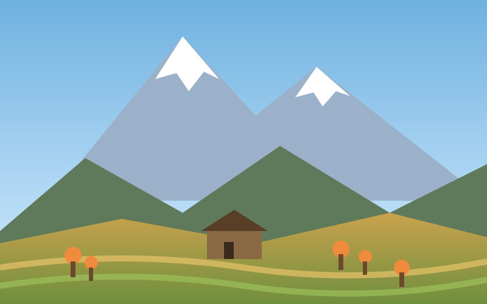

Baltit & Altit Forts
Centuries-old fortified houses of the former rulers, with carved wooden windows and rooftop views over the valley.
Hunza sits in the far north of Gilgit-Baltistan, threaded by the Karakoram Highway. Villages such as Karimabad, Altit and Passu are surrounded by stepped fields, and on clear mornings the snowy tops of Rakaposhi and Ultar Sar glow above the rooftops.
Local life revolves around the orchards. Spring brings blossom, summer brings apricots drying on flat roofs, and October paints the valley in gold and red.

Centuries-old fortified houses of the former rulers, with carved wooden windows and rooftop views over the valley.
A vivid blue lake formed by a landslide in 2010. Take a boat ride and see the highway tunnels built around it.
Jagged peaks above the Passu Glacier, and one of the most photographed rope footbridges in the country.
A short drive above Duikar for a sunrise or sunset panorama across Hunza, Nagar and the high peaks.
The high border pass with China, usually open in the warmer months. Plan it as a long day trip.
Try walnut cake, apricot soup and chapshuro, a savoury meat pie, in family-run cafes.
See how Hunza fits into our seven-day route, or send us your own dates.
View the itinerary Contact us